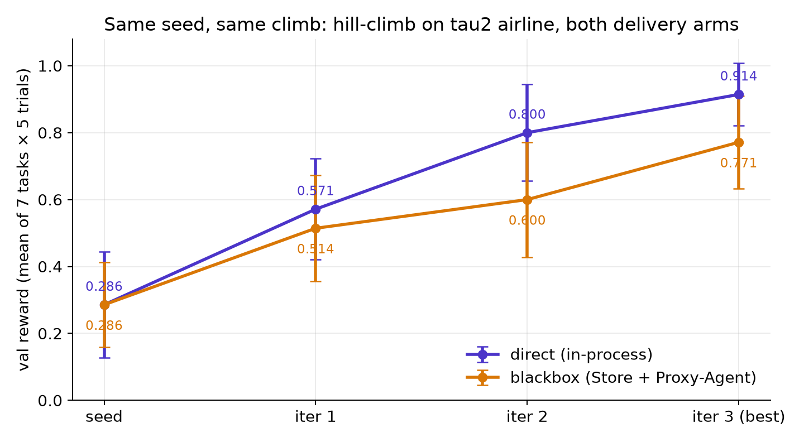
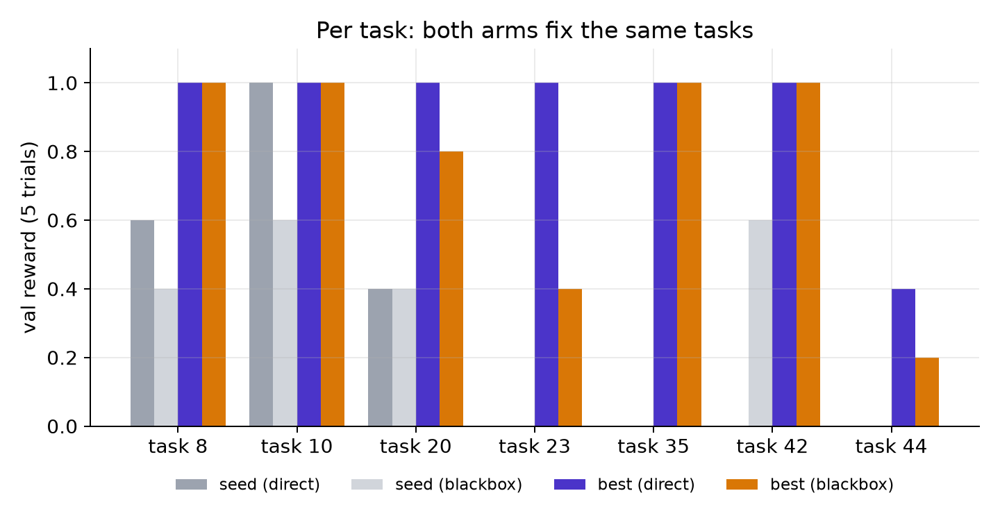
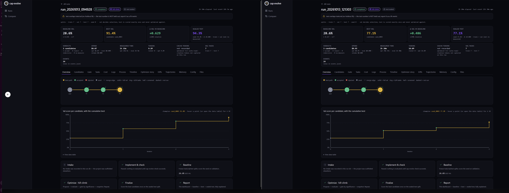
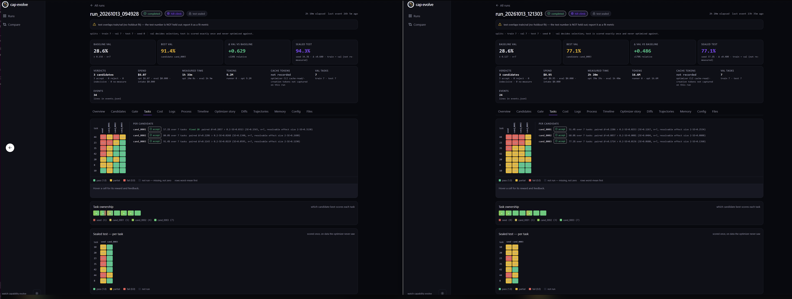
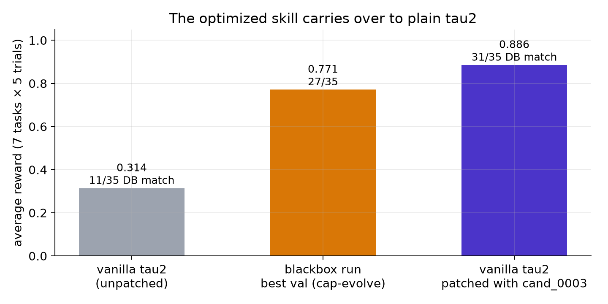

Optimizing an Agent Without Touching It (cap-evolve's Blackbox Arm)
The same optimization loop, with each candidate delivered through a skill store and a Proxy-Agent — it climbs like in-process delivery, and the skill it learns lifts plain τ²-bench from 31% to 89%.
Most tools that make an AI agent better assume they can reach inside it. They edit the agent's prompt file, rewrite its tool code, then run it again and check the score. That works when the agent is a project on your laptop.
Real agents are often built differently — especially in the enterprise. There, an agent's sources, its prompts and its tools, usually aren't exposed to the team trying to improve it: they belong to another team, ship as a packaged product, or sit behind a deployment nobody may edit. You can't open the prompt file or rewrite the tool code.
A system like Skillberry gives a way in. The agent's skills live in a store, and a proxy in front of the model decides what the model sees on every call — which tools, which instructions — so you can improve what the agent gets without touching the agent itself.
That is what cap-evolve's blackbox arm optimizes. So here is the question almost nobody asks: if you improve a skill in one setup and ship it through another, did you ever measure the version that actually runs?
"Optimize it here, ship it there."
The candidate is scored one way, and delivered to the real agent another way.
The number came from one delivery path. The users get another. This post measures both.
That question is why we built a second delivery arm into cap-evolve, a free, open-source project for optimizing AI agents. With it, cap-evolve optimizes a skill through the store and the proxy, exactly the way it will run. Here is what that gave us on a real benchmark, before anything else:
Task success on τ²-bench's airline benchmark: 7 tasks, 5 trials each. The agent is claude-haiku-4-5; the simulated user is claude-sonnet-5. cap-evolve learned the skill through the Skillberry store and proxy, and we then patched it into an unmodified copy of τ²-bench. Database matches went from 11/35 to 31/35 (p ≈ 5·10⁻⁷).
Source: cap-evolve blackbox run run_20261013_121303, best candidate cand_0003, re-run in τ²-bench with its tools patched in. Same 7 tasks the optimizer searched on: a fit, not a held-out result.
Meet the blackbox arm, in 30 seconds
cap-evolve runs a loop on your agent: try it, look at what failed, suggest a fix, re-test it, and keep the fix only if the gain is bigger than the measurement noise. Until now the fix always reached the agent directly, as files the benchmark loads.
The blackbox arm changes only that last step. Each candidate becomes a skill in the Skillberry Store, and the Skillberry Proxy-Agent injects it into the agent's model calls. The benchmark never sees a skill file. One line in the run's spec switches it on:
# capevolve.yaml
intervention: blackbox # deliver through the Skillberry Store + Proxy-Agent
skill_name: my_skill # the one skill the proxy serves
capabilities: [tools] # what gets optimized: the agent's tools
The whole worked example then runs from three commands — they are walked through step by step further down.
If this sounds useful, ⭐ star cap-evolve on GitHub.
It takes five seconds and helps other people find the project.
Now the part that took longer: how
the two arms compare, and how a skill learned through a proxy ends up as plain code anyone can run.
What the blackbox arm is
cap-evolve keeps two questions apart, and they are easy to mix up:
- What gets edited: the capability. The agent's prompt, its tools, or a whole skill package.
- How the edited version reaches the model: the intervention, or delivery arm. Either loaded in-process (direct), or served through the store and proxy (blackbox).
They are independent. In the example below, both arms optimize exactly the same thing, the airline agent's tools, and only the delivery differs. That is what makes a fair comparison possible.
Direct vs blackbox
What stays the same, and what changes, when the candidate is delivered through the proxy.
| Direct | Blackbox | |
|---|---|---|
| Where the candidate lives | tool code the runner loads in its own process | a skill in the Skillberry Store |
| What the agent calls | the model, directly | a sentinel model routed to the Proxy-Agent, which calls the model |
| Extra services | none | Store (8000), Proxy-Agent (7000), τ²'s environment service (8004) |
| The benchmark | vanilla τ²-bench, never edited — on both arms | |
| The simulated user | calls the model directly, never the proxy — on both arms | |
Only the agent goes through the Proxy-Agent. The user simulator, judges and verifiers call the model directly, so only the agent under test sees the candidate.
How it works
We didn't fork τ²-bench to make this work. τ² is never edited: everything the blackbox arm needs is added from outside the benchmark, by a small tailoring module next to the adapter, built for one pinned τ² commit.
One trial through the blackbox arm
Solid arrows are requests, dashed are responses. The user simulator never goes through the proxy.
Request: the agent's call carries a sentinel model name and context headers (e.g. env_id, task_id). Response: the Proxy-Agent returns the model's reply, which gets returned to the caller agent as an optimized response.
One trial is one session:
- The trial opens a remote environment:
POST :8004/start_environmentreturns anenv_id. - The agent calls the sentinel model with a context header of env_id. The model calls the skill's tools, which run in the store against that env_id.
- Before scoring, the environment's record is merged into τ²'s, so the scorer replays the real database writes.
- After scoring, the proxy's record is merged, so the optimizer also sees the skill's own composite calls.
- Finally, the proxy session and the environment are both closed — even when the trial fails.
Before you start
gitandmake.setup.shcreates a Python 3.12 environment.- A repo-root
.envwith your model gateway (OPENAI_BASE_URL,OPENAI_API_KEY), the model the Proxy-Agent calls (SPA_MODEL_NAME) and the user simulator's model (TAU2_USER_MODEL). - An optimizer: a logged-in Claude Code session, or
ANTHROPIC_API_KEY.
The run, step by step
Installs cap-evolve and τ² (pinned), installs the project, provisions the store and proxy, and passes the cap-evolve check gate. Ends with READY.
2 · Run — pick one
run.sh --smokeOne task, one trial, no optimizer spend. Checks the wiring: starts τ²'s environment service and the store, deploys the seed skill; the preflight starts the proxy.
run.sh7 tasks × 5 trials, Claude Code optimizer, hill-climb, 3 rounds. The run measured in this post. The banner prints the dashboard URL.
# 1 · setup
bash examples/tau2_sierra_airline/blackbox/setup.sh
# 2 · run, one of:
# smoke: task 9, one trial, no optimizer spend
bash examples/tau2_sierra_airline/blackbox/run.sh --smoke
# full run: the run measured in this post
bash examples/tau2_sierra_airline/blackbox/run.sh
What the optimizer edits
The seed is one skill, my_skill, imported into the Skillberry Store — the
only skill the Proxy-Agent serves. Each file under its
scripts/ folder is one tool, and the starting files are τ²'s 14 airline tools: just a
signature and a docstring calling a frozen primitive that runs τ²'s real code.
def get_user_details(user_id: str):
"""Get the details of a user, including their reservations. ..."""
return env_get_user_details(user_id=user_id) # a frozen primitive

intervention: blackbox, skill_name: my_skill, and the paths the optimizer may not touch.The optimizer rewrites these tools and adds new ones. Every tool must follow a few delivery rules, and a tool that breaks one fails silently — the store still accepts it:
- One public function per file, named exactly like the file. Helpers are nested.
- The signature and docstring are the schema the model reads. The seed's 14 signatures are frozen, because the scorer matches actions by name and arguments.
- Structured arguments are Pydantic models in the tool's own file, so the store publishes a rich schema.
- τ² is reached only through the frozen primitives. A new or composite tool is a new file.
The optimizer is told these rules up front: they are a section of its instructions, optimizer/INSTRUCTIONS.md, so every candidate is written with them in hand.
Reading the results: does it climb like the direct arm?
The real test of a delivery arm is not whether it improves an agent. It is whether it measures the same improvement as the direct arm. So we ran one experiment twice, changing only the delivery: τ²-bench airline, 7 tasks, 5 trials each, the same models, the same optimizer (Claude Code, hill-climb, 3 rounds), and the same acceptance rule.
Same seed, same climb, same tasks fixed
Validation score per round, mean of 7 tasks × 5 trials, ± one standard error.
| Direct | Blackbox | |
|---|---|---|
| Starting skill (seed) | 0.286 | 0.286 |
| Round 1 | 0.571 | 0.514 |
| Round 2 | 0.800 | 0.600 |
Best (cand_0003, on both arms) | 0.914 ± 0.093 | 0.771 ± 0.138 |
| Rounds accepted | 3 / 3 | 3 / 3 |
| Sealed test: seed → best | 0.343 → 0.943 | 0.371 → 0.771 |
| Optimizer spend | $6.07 | $8.95 |
Source: .capevolve/run_20261013_094928 (direct) and .capevolve-blackbox/run_20261013_121303 (blackbox). Agent claude-haiku-4-5, user simulator claude-sonnet-5, optimizer claude-opus-5-5. Train, val and test are the same 7 tasks.

Read this as agreement, not as a race. The arms start from the same seed, the gate accepts every round on both, and both pick the same final candidate. The final gap, 0.914 vs 0.771, is 0.14 — smaller than one combined standard error (about 0.17). And, most telling, the same tasks improve:



Where blackbox reads a little lower — task 23 is the clearest case — we can point to the cause, and it isn't the optimization. Two properties of the current Skillberry stack cost the blackbox agent a few points: the proxy doesn't keep tool results from one conversation turn to the next, so a detail the agent looked up earlier (like a payment-method id) is missing later; and the store strips quotes from tool results, which damages JSON-looking output. The next section shows what happens when both are out of the way.
Four checks before trusting the number
- One environment session per trial attempt — 7 tasks × 5 trials gives 35, plus retries.
- No session left open — every environment the run started was stopped.
- The writes reach the scorer — some trials match the expected database.
- The agent's cost reads 0 — the proxy reports no token usage, so 0 means "not measured".
Honesty note: all three splits here are the same 7 tasks, so the test number is a fit, not a held-out result. The dashboard says so on every run, and so do we.
From a store skill back to plain τ² code
An optimized skill only helps if someone can run it. So we took the blackbox winner,
cand_0003, and put its tools into a fresh, unmodified copy of τ²-bench — changing exactly
one file, the airline domain's tools.py.
The winner is a skill of 20 tools: τ²'s 14, rewritten, plus 6 new ones. A few of them, in plain
words: find_same_day_reservations groups a customer's flights by day, so the agent cancels
exactly the right duplicate bookings; book_reservations_in_order makes several bookings in a
fixed order, so reservation ids come out the same every time; and cancel_reservation now
refuses an insurance-only cancellation until the customer's reason has been checked.
The patch is generated mechanically from the skill's scripts. τ²'s original tools stay as they are, renamed into a base class; the candidate's tools are copied word for word on top of them; and every call to a store primitive becomes a call to τ²'s original tool:
# src/tau2/domains/airline/tools.py, patched
class _AirlinePrimitives(ToolKitBase): # τ²'s original AirlineTools, unchanged
...
class AirlineTools(_AirlinePrimitives): # what τ² now serves to the agent
def _prim(self, tool, **kwargs): # an original tool, returned as the store returned it
try:
resp = getattr(_AirlinePrimitives, tool)(self, **kwargs)
except Exception as e:
return f"Error: {e}"
content = Environment.to_json_str(resp)
try:
return json.loads(content)
except (TypeError, ValueError):
return content
@is_tool(ToolType.READ)
def find_same_day_reservations(self, user_id: str) -> Any:
"""...the candidate's docstring, word for word..."""
user = self._prim("get_user_details", user_id=user_id) # was env_get_user_details(...)
...
How a store skill becomes τ² tools
τ²'s AirlineTools is renamed _AirlinePrimitives, body unchanged. Every database read and write still runs τ²'s own code.
Each script becomes a method of the new AirlineTools, word for word, plus self and a decorator.
env_<tool>(…) → self._prim("<tool>", …)_prim returns exactly what the store returned: parsed JSON, or an "Error: …" string.
The candidate's argument models are kept where they differ from τ²'s, so the agent sees the same tool schemas as through the proxy.
Checked before running: for all 20 tools the schema the agent is sent equals the one built from the candidate's own script, and replaying each task's correct answer through the patched tools gives the same final database as through the originals — the scoring target did not move.
Then we ran the exact same command on both copies of τ²-bench — unpatched and patched — with the same models, the same tasks and the same per-trial random seeds:
tau2 run --domain airline --task-ids 8 10 20 23 35 42 44 --num-trials 5 \
--agent llm_agent --agent-llm openai/aws/claude-haiku-4-5 \
--user-llm openai/aws/claude-sonnet-5 --max-concurrency 50

Every task that improved used the new tools
| Task | Unpatched | Patched | What made the difference |
|---|---|---|---|
| 8 | 0.20 | 1.00 | the rewritten book_reservation checks payment and baggage |
| 20 | 0.40 | 1.00 | search_itineraries_by_price; a bad booking is refused and retried |
| 23 | 0.00 | 0.60 | book_reservations_in_order: the ids match the expected database |
| 35 | 0.20 | 1.00 | search_itineraries_by_price |
| 42 | 0.40 | 1.00 | find_same_day_reservations: exactly the two right cancellations |
| 44 | 0.00 | 0.60 | calculate_flight_change_cost + get_reservation_flight_times |
Same settings and the same 5 trial seeds in both runs; the only recorded difference is the code commit. The patched run called 6 tools that exist only in cand_0003. Database matches 11/35 → 31/35, two-proportion z = 4.88, one-sided p ≈ 5·10⁻⁷.
Why this matters
A score going up is easy to produce. The harder question is whether it would go up the same way through the path that actually ships. Two things here answer that:
- The two arms agree. Same start, same accepted rounds, same tasks fixed, and a final gap inside the noise. Optimizing through the proxy measures the same thing as optimizing in-process.
- The result is portable. The skill learned through the proxy became ordinary τ² code with a one-file patch, and kept — and grew — its gain in a setup with no proxy at all.
Both rules cap-evolve is built on still hold on the blackbox arm: an edit is kept only if its gain beats the measured noise, and the test set is scored exactly once at the end.
Troubleshooting
| Symptom | Fix |
|---|---|
| preflight says the store or proxy is not provisioned | run setup.sh; a run never provisions |
every rollout errors with deploy failed | read the message: the candidate could not be deployed |
| τ² is at an unexpected commit | run setup.sh, which checks out the pinned commit |
| the database never matches on any trial | the environment's record is not merged before scoring |
| the agent behaves like a different model | set SPA_MODEL_NAME before the store starts |
Services left running from an earlier run pass the preflight while serving the old skill — stop the stack between benchmarks.
Going further Work in progress
To put your own benchmark on the blackbox arm, its runner must route only the agent to the proxy, send the context headers, expose its environment over HTTP, merge both records at the right moments, open and close a session per trial, and deploy each candidate before running it. The worked example was produced by a coding agent following one onboarding prompt.
Where the blackbox arm is honestly not there yet
This is a beta (version 0.x), and these gaps are written down on purpose — each one is a well-sized place to contribute:
- No held-out split yet. Every number here is a fit on the same 7 tasks. The next run needs tasks the optimizer never saw.
- Two proxy-stack costs. Tool results don't survive across turns, and quotes are stripped from tool output. Both cost the blackbox arm points that the direct arm doesn't lose.
- One benchmark. The arm is proven on τ²-bench airline. A benchmark has to provide a few things to support it (an HTTP environment, per-trial sessions, the right merge points), and a run on a benchmark that can't do this should fail loudly instead of quietly running in-process.
- The agent's own cost isn't counted. The proxy doesn't report token usage, so the agent's cost reads as 0 on the blackbox arm — not measured, not free.
None of this is hidden. It's written down so anyone reading can pick one up — that's what open source is for.
Star it, try it, or help close a gap
cap-evolve is Apache-2.0 licensed: github.com/skillberry-ai/cap-evolve. If this was useful, the easiest way to help is to star the repo — it costs nothing and is how other people find an honest agent-optimization project.
From there: the Blackbox tab walks through the run step by step, docs/blackbox has the details, and one onboarding prompt is all a coding agent needs to set up the benchmark on either arm.